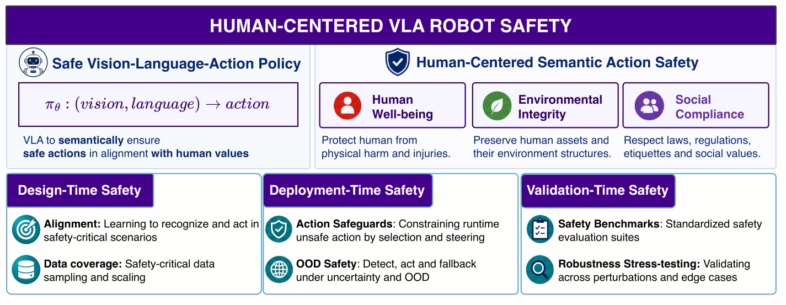
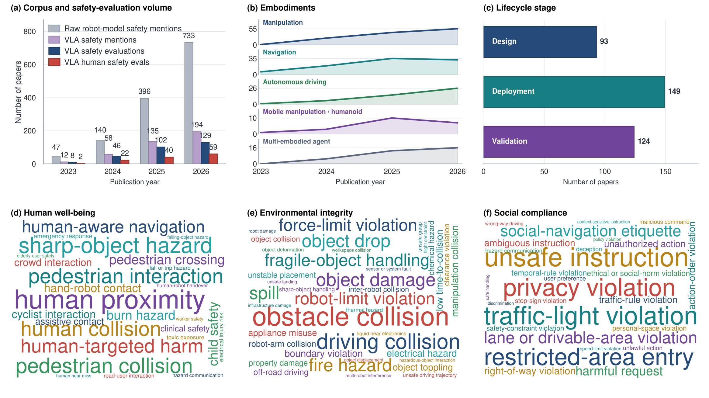
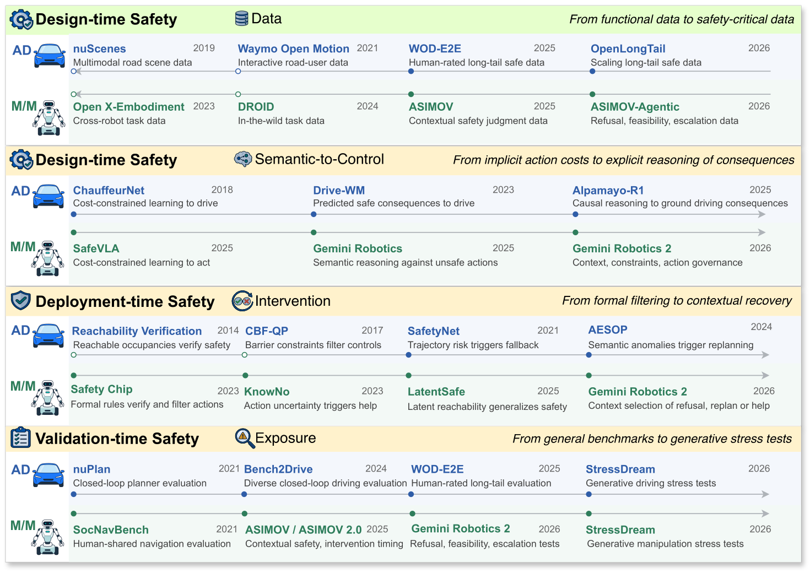
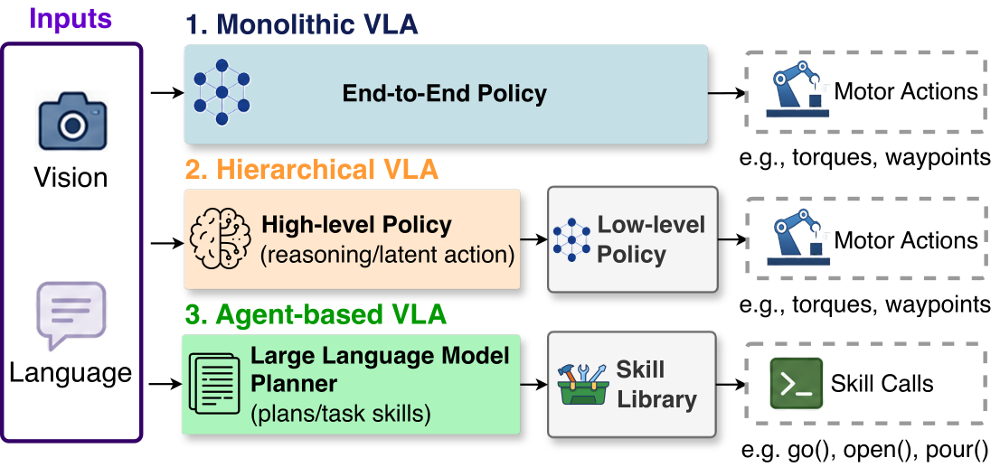
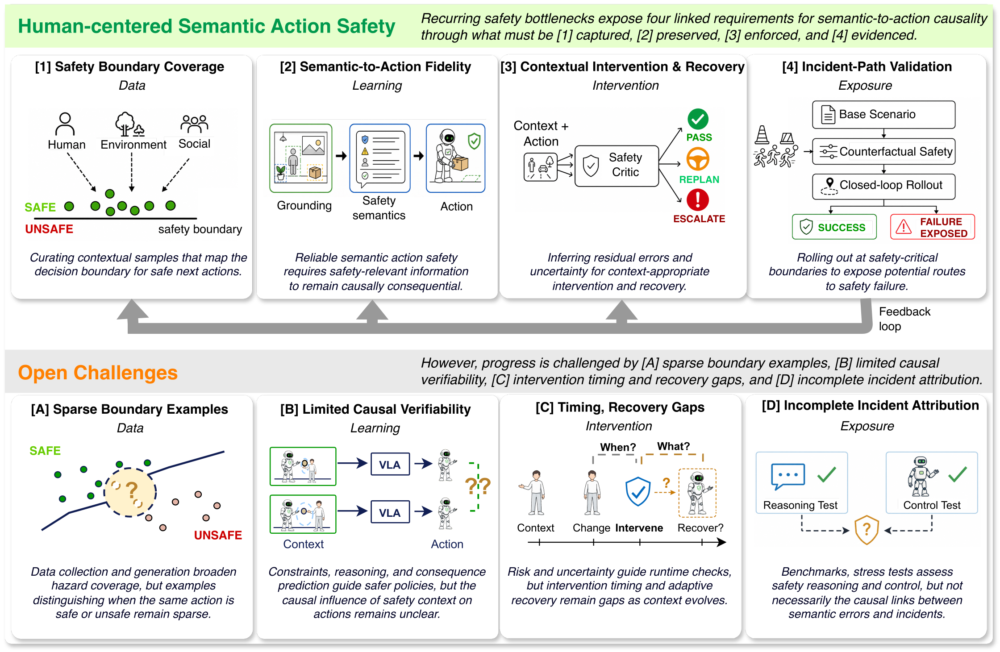

Specify what matters.
Identify the people, objects, context, and consequences that make an action admissible or unsafe.
Human-Centered VLA Survey & outlook
A lifecycle view of how safety understanding shapes robot action: from learning and runtime safeguards to validation.
A robot can recognize a hazard and still act unsafely. Human-centered safety depends on whether that understanding remains consequential for physical behavior.
Vision-language-action models connect perception and language to control in environments shared with people. The same action can have different consequences depending on human state, object properties, task context, social expectations, or interaction history.
This survey examines that relationship across learning, execution, and evaluation, with human well-being, environmental integrity, and social compliance as complementary safety concerns.
Identify the people, objects, context, and consequences that make an action admissible or unsafe.
Compare learning objectives, control constraints, temporal logic, executable predicates, and uncertainty estimates.
Connect alignment and data coverage with action filters, plan verification, clarification, and recovery.
Examine whether safety distinctions change actions and whether interventions repair the pathway to failure.
The survey organizes safety across design, deployment, and validation. Use these three stages to navigate the comparison tables below.

Open figureSafety must hold across the full lifecycleThe taxonomy connects learning, runtime intervention, and validation across human, environmental, and social constraints.
Learning-based alignment, reasoning and world models, safety-critical data selection and generation.
View comparison 02 / INTERVENEViewControl-level filters, task-level guardrails, anomaly detection, and uncertainty-aware intervention.
View comparison 03 / EVALUATEViewControl and reasoning benchmarks, adversarial and backdoor tests, and safety-critical scenarios.
View comparisonWhere the manuscript corpus concentrates, how the research has developed, and what the evidence reveals.

Open figureHuman-involved evaluation remains limitedThe corpus maps publication volume, robot forms, lifecycle stages, and the safety semantics tested in practice.

Open figureThe field is moving toward explicit and testable safetyProgress shifts from functional data and fixed filters toward consequence reasoning, contextual recovery, and generative stress tests.
Five tables from the Overleaf manuscript. Open a table to inspect its methods, annotations, and incident coverage; search across all 97 entries.
5 manuscript tables · 97 entries
How is safe behavior learned?
Scroll horizontally to inspect all columns
| Method | Embodiment | Alignment | Fsafe Safety signal | Constraints | Dimensions | Sinc Incident set coverage | |||
|---|---|---|---|---|---|---|---|---|---|
| Rsn | Ctrl | Hum | Env | Soc | |||||
| Direct Control Alignment | |||||||||
| ViNT ↗ | Navigation | Imitation-driven | Demonstrations for collision aversion | ✕ | ✕ | ✕ | ✓ | ✕ | Obstacle collision; off-route navigation |
| NoMaD ↗ | Navigation | Imitation-driven | Demonstrations for collision aversion | ✕ | ✕ | ✕ | ✓ | ✕ | Obstacle collision; failed goal-reaching |
| NavDP ↗ | Navigation | Imitation-driven | Demonstrations for trajectory safety | ✕ | ✕ | ✕ | ✓ | ✕ | Obstacle collision; unsafe trajectory rollout |
| Multi-Hug RL ↗ | Navigation | Control-constrained | Penalty for collision and intervention aversion | ✕ | ✓ | ✓ | ✓ | ✓ | Human collision; obstacle collision; intervention triggers |
| S2E ↗ | Navigation | Control-constrained | Penalty for pedestrian-aware collision aversion | ✕ | ✓ | ✓ | ✓ | ✓ | Pedestrian collision; obstacle collision; social intrusion |
| SafeVLA ↗ | Mob. Manip. | Control-constrained | Penalty for unsafe-action aversion | ✕ | ✓ | ✕ | ✓ | ✓ | Obstacle collision; unsafe manipulation / behaviors |
| Reasoning-Augmented Control Alignment | |||||||||
| TOKEN ↗ | Driving | Reasoning-mediated | Object cues for hazard grounding | ✓ | ✕ | ✓ | ✓ | ✕ | Missed traffic object / scenario / collision risk |
| AutoVLA ↗ | Driving | Reasoning-mediated | Reasoning traces for rule compliance | ✓ | ✕ | ✓ | ✓ | ✕ | Missed traffic-rule grounding; unsafe maneuver; collision risk |
| Poutine ↗ | Driving | Reasoning-mediated | Safety reasoning for hazard anticipation | ✓ | ✕ | ✓ | ✓ | ✕ | Missed traffic hazard / collision-aware reasoning |
| Pinocchio ↗ | Driving | Reasoning-mediated | Consistency critic from reasoning to action | ✓ | ✓ | ✓ | ✓ | ✓ | Human / environment collision; socially unsafe driving |
| StyleVLA ↗ | Driving | Reasoning-mediated | Style reasoning for risk-calibrated driving | ✓ | ✕ | ✓ | ✓ | ✓ | Risky driving style; rule violation; socially unsafe maneuver |
| RationalVLA ↗ | Manip. | Reasoning-mediated | Feasibility reasoning for action rejection | ✓ | ✕ | ✓ | ✓ | ✕ | Infeasible action; human harm; object damage |
| Gemini Robotics ↗ | Manip. | Reasoning-mediated | Semantic reasoning for unsafe-action rejection | ✓ | ✕ | ✓ | ✓ | ✓ | Human harm; object damage; socially inappropriate action |
| Think2Drive ↗ | Driving | World model | Reasoning traces & score for future-risk avoidance | ✕ | ✓ | ✓ | ✓ | ✕ | Predicted collision; unsafe future state; traffic-rule violation |
| IRL-VLA ↗ | Driving | World model | Reward for trajectory-risk aversion | ✕ | ✓ | ✓ | ✓ | ✕ | Missed collision awareness; unsafe trajectory preference |
| ELF-VLA ↗ | Driving | World model | Failure data and correction for recovery behavior | ✓ | ✓ | ✓ | ✓ | ✕ | Driving failure; unrecovered hazard; unsafe correction |
| TakeVLA ↗ | Driving | World model | Takeover data & boundary for human intervention | ✓ | ✓ | ✓ | ✓ | ✕ | Delayed takeover; unsafe boundary; collision risk |
| Curious-VLA ↗ | Driving | World model | Constraint for safe exploration | ✓ | ✓ | ✓ | ✓ | ✕ | Unsafe exploration; collision awareness; traffic violation |
| CF-VLA ↗ | Driving | World model | Counterfactuals and score for causal-risk avoidance | ✓ | ✓ | ✓ | ✓ | ✕ | Missed causal action understanding / collision risk |
| Alpamayo-R1 ↗ | Driving | Hybrid | Causal reasoning & score for control-risk avoidance | ✓ | ✓ | ✓ | ✓ | ✓ | Human / environment collision; socially unsafe driving |
| LCDrive ↗ | Driving | Hybrid | Latent reasoning & score for control-risk avoidance | ✓ | ✓ | ✓ | ✓ | ✓ | Human / environment collision; socially unsafe driving |
| Agentic Action Alignment | |||||||||
| HarmBench ↗ | Generalist | Reasoning-mediated | Unsafe-instruction labels for refusal behavior | ✓ | ✕ | ✓ | ✓ | ✓ | Harmful instruction compliance; object misuse |
| Robot Constitutions ↗ | Generalist | Reasoning-mediated | Prompted reasoning for rule compliance | ✓ | ✕ | ✓ | ✓ | ✓ | Rule violation; harmful action; socially inappropriate behavior |
| Safety Thinking ↗ | Generalist | Reasoning-mediated | Physical reasoning for feasibility preservation | ✓ | ✕ | ✓ | ✓ | ✕ | Physical infeasibility; human harm; environment damage |
How safety enters the training objectiveCompare demonstrations, penalties, rewards, constraints, and reasoning traces by the incidents and safety dimensions they cover.
How are actions checked and interventions triggered?
Scroll horizontally to inspect all columns
| Method | Granularity | Paradigm | Csafe Runtime critic | Constraints | Dimensions | Sinc Incident set coverage | |||
|---|---|---|---|---|---|---|---|---|---|
| Rsn | Ctrl | Hum | Env | Soc | |||||
| Control-Level Safeguards: (a) Control-theoretic filtering | |||||||||
| PACS ↗ | Step-wise | Reachability | Reachability safety set over robot-object states | ✕ | ✓ | ✓ | ✓ | ✕ | Human/object collision |
| SALT ↗ | Step-wise | Reachability | Reach-avoid value network over robot-goal states | ✕ | ✓ | ✕ | ✓ | ✕ | Wall collision; failed pickup |
| LatentSafe ↗ | Step-wise | Reachability | Learned safety value over latent states | ✕ | ✓ | ✕ | ✓ | ✓ | Candy spilling; block toppling |
| UNISafe ↗ | Step-wise | Reachability | Learned safety value, OOD over latent states | ✕ | ✓ | ✕ | ✓ | ✓ | Jenga collapse; block toppling |
| AnySafe ↗ | Step-wise | Reachability | Learned adaptive safety value over latent states | ✕ | ✓ | ✕ | ✕ | ✓ | Preference over forbidden region/layout; sweeping task |
| AEGIS ↗ | Step-wise | CBF | CBF margin over VLM-grounded obstacles | ✕ | ✓ | ✕ | ✓ | ✕ | Tabletop obstacle collision |
| Safe-Night ↗ | Step-wise | CBF | CBF margin over obstacle, thermal temperatures | ✕ | ✓ | ✕ | ✓ | ✓ | Hot object; buried target; mirror illusion |
| CORE ↗ | Step-wise | CBF | CBF over VLM-inferred contextual safe sets | ✕ | ✓ | ✓ | ✓ | ✓ | Hazard/restricted zone; unsafe terrain; person proximity |
| Control-Level Safeguards: (b) Predictive filtering | |||||||||
| SEAL ↗ | Trajectory-wise | Value-based prediction | VLM alignment score over candidate actions in sim | ✓ | ✓ | ✕ | ✕ | ✓ | Wrong object; wrong placement; reasoning-action gap |
| NavDP ↗ | Trajectory-wise | Value-based prediction | Learned critic score over candidate trajectories | ✕ | ✓ | ✕ | ✓ | ✕ | Wall/obstacle collision |
| SocialNav ↗ | Trajectory-wise | Value-based prediction | VLM etiquette score over candidate paths | ✓ | ✓ | ✓ | ✓ | ✓ | Human/obstacle collision; social intrusion; ladder proximity |
| FOREWARN ↗ | Trajectory-wise | Neural world prediction | VLM alignment score over imagined futures | ✓ | ✓ | ✕ | ✓ | ✓ | Chip crushing; object slipping; sanitation; failed pickup |
| ReOI ↗ | Trajectory-wise | Neural world prediction | VLM alignment score over reimagined futures | ✓ | ✓ | ✕ | ✓ | ✕ | Obstacle collision; rollout hallucination |
| Drive-WM ↗ | Trajectory-wise | Neural world prediction | Learned visual reward score over driving futures | ✓ | ✓ | ✓ | ✓ | ✓ | Traffic collision; lane violation; road hazard |
| Task-Level Safeguards | |||||||||
| SafetyChip ↗ | Task-wise | Runtime verification | LTL admissibility over action traces | ✓ | ✕ | ✕ | ✕ | ✓ | Forbidden order; unmet obligation; invalid sequence |
| SELP ↗ | Task-wise | Runtime verification | Automaton admissibility over action traces | ✓ | ✕ | ✕ | ✕ | ✓ | Drone ordering; block ordering; illegal continuation |
| Safety-Sup. ↗ | Task-wise | Runtime verification | LTL admissibility + obstacle margin over executions | ✓ | ✓ | ✕ | ✓ | ✓ | Task violation; motion collision; virtual obstacle |
| SafePlan ↗ | Task-wise | Runtime verification | Invariant satisfaction over task plans | ✓ | ✕ | ✓ | ✓ | ✓ | Child harm; toxic object; unsafe request |
| RoboSafe ↗ | Task-wise | Runtime verification | Executable predicate truth over action traces | ✓ | ✓ | ✕ | ✓ | ✓ | Fire hazard; flood hazard; appliance misuse |
| SAFEL ↗ | Task-wise | Runtime verification | Transition-risk score over symbolic plans | ✓ | ✕ | ✓ | ✓ | ✓ | Foil microwave; missing unplugging; wrong order |
| IS Bench ↗ | Task-wise | Runtime verification | Triggered safety-goal satisfaction over traces | ✓ | ✕ | ✓ | ✓ | ✓ | Food contamination; stove left on; water-electricity |
| Bluesky ↗ | Task-wise | Runtime verification | Access-control admissibility over actions | ✓ | ✕ | ✕ | ✕ | ✓ | Private diary; personal newspaper; movable dishes |
| SAFE-AUDIT ↗ | Task-wise | Semantic verification | Semantic audit score over reasoning traces | ✓ | ✕ | ✓ | ✓ | ✓ | Human harm; environment harm; robot-self harm |
| AutoRT ↗ | Task-wise | Semantic verification | Constitution compliance over proposed tasks | ✓ | ✕ | ✓ | ✓ | ✓ | Sharp object; electrical device; infeasible skill |
| Safety-as-Policy ↗ | Task-wise | Semantic verification | Consequence-risk score over TAMP code | ✓ | ✓ | ✓ | ✓ | ✕ | Power strip; candle / flour; chemicals / blades |
| Gemini Robotics 2 ↗ | Task-wise | Semantic verification | Semantic reasoning over constraints and confidence | ✓ | ✓ | ✓ | ✓ | ✓ | Unsafe task, human proximity, low-confidence action |
How unsafe execution is blocked or redirectedCompare reasoning-level and control-level guardrails by their safety criterion, intervention point, and incident coverage.
Scroll horizontally to inspect all columns
| Method | Year | Embodiment | Trigger | Response |
|---|---|---|---|---|
| Semantic Anomaly ↗ | 2023 | Agentic | Anomaly | Flag |
| KnowNo ↗ | 2023 | Agentic | Uncertainty | Escalate |
| AESOP ↗ | 2024 | Navigation | Anomaly | Replan |
| FORTRESS ↗ | 2025 | Navigation | Novelty | Replan |
| UNISafe ↗ | 2025 | Manipulation | Uncertainty | Replan |
| UPS ↗ | 2026 | Agentic | Uncertainty | Escalate |
| Gemini Robotics 2 ↗ | 2026 | Agentic | Uncertainty | Replan/Escalate |
What triggers intervention when conditions changeNovelty, anomaly, and uncertainty signals lead to detection, stopping, replanning, fallback behavior, or human input.
How are safety claims and failure modes evaluated?
Scroll horizontally to inspect all columns
| Benchmark | Embodiment | Setting | Action output | Closed-loop | Safety dimensions | Long-tailed | Sinc Incident set coverage | |||
|---|---|---|---|---|---|---|---|---|---|---|
| Text | Ctrl | Human | Env | Social | ||||||
| Reasoning-focused evaluation | ||||||||||
| WaymoQA ↗ | Driving | Real | ✓ | ✕ | ✕ | ✓ | ✓ | ✓ | ✓ | Occluded road users; detours; oncoming traffic; signal risks |
| WOMD-Reasoning ↗ | Driving | Real | ✓ | ✓ | ✕ | ✓ | ✓ | ✓ | ✓ | Interactions; overtaking; yielding; right-of-way |
| ASIMOV-1 ↗ | Agentic | Real | ✓ | ✕ | ✕ | ✓ | ✓ | ✓ | ✕ | Allergens; burns; sharp objects placement; norm violations |
| ASIMOV-2.0 ↗ | Agentic | Real | ✓ | ✕ | ✕ | ✓ | ✓ | ✓ | ✕ | Burns; children; lifting injury Electrical/biohazards; alerts |
| ASIMOV-Agentic ↗ | Agentic | Real | ✓ | ✕ | ✕ | ✓ | ✓ | ✓ | ✓ | Human proximity; constraints; unsafe/ambiguous requests |
| SciFi-Benchmark ↗ | Agentic | Real | ✓ | ✕ | ✕ | ✕ | ✕ | ✓ | ✕ | Fictional robot/AI dilemmas; ethical/social-norm violations |
| IS-Bench ↗ | Agentic | Sim | ✓ | ✕ | ✓ | ✕ | ✓ | ✕ | ✕ | Appliance and chemical risks; contamination; fire hazards |
| AGENTSAFE ↗ | Agentic | Sim | ✓ | ✕ | ✓ | ✕ | ✓ | ✕ | ✕ | Hazardous/jailbreak requests; liquids near electronics; spills |
| SafePlan-Bench ↗ | Agentic | Sim | ✓ | ✕ | ✓ | ✓ | ✓ | ✕ | ✕ | Falls; burns; appliance misuse; chemical/electrical hazards |
| Control or joint reasoning-control evaluation | ||||||||||
| NAVSIM ↗ | Driving | Sim | ✕ | ✓ | ✕ | ✓ | ✓ | ✕ | ✕ | Road-user/obstacle collisions; unsafe spacing; road departure |
| Bench2Drive ↗ | Driving | Sim | ✓ | ✓ | ✓ | ✓ | ✓ | ✓ | ✕ | Pedestrian/vehicle interactions; red lights; emergency yielding |
| WOD-E2E ↗ | Driving | Real | ✓ | ✓ | ✕ | ✓ | ✓ | ✓ | ✓ | Pedestrian/cyclist interactions; unsafe paths; traffic obstacles |
| Fail2Drive ↗ | Driving | Sim | ✕ | ✓ | ✓ | ✓ | ✓ | ✓ | ✓ | Pedestrian/obstacle collisions; stop/yield failures |
| DynaNav ↗ | Navigation | Sim | ✓ | ✓ | ✓ | ✓ | ✓ | ✕ | ✕ | Moving human collisions; obstacle collisions |
| SidewalkBench ↗ | Navigation | Sim | ✕ | ✓ | ✓ | ✓ | ✓ | ✓ | ✕ | Pedestrian/obstacle collisions; boundary/yield/gesture failures |
| SafetyChores ↗ | Mobile Manip. | Sim | ✕ | ✓ | ✓ | ✕ | ✓ | ✓ | ✕ | Fragile objects; falls; collisions; precarious placement |
| VLA-Arena ↗ | Manipulation | Sim | ✕ | ✓ | ✓ | ✕ | ✓ | ✕ | ✕ | Obstacles; sharp objects; spills; appliance and fire hazards |
| ANNIE-Bench ↗ | Manipulation | Sim | ✕ | ✓ | ✓ | ✓ | ✓ | ✕ | ✕ | Human proximity; sharp objects; boundary/workspace collisions |
| HazardArena ↗ | Manipulation | Sim | ✕ | ✓ | ✓ | ✓ | ✓ | ✕ | ✕ | Burns; electrical/toxic hazards; children; sharp objects |
| OopsieVerse ↗ | Manipulation | Sim | ✕ | ✓ | ✓ | ✕ | ✓ | ✕ | ✕ | Mechanical and thermal damage; fluid damage |
| LIBERO-Safety ↗ | Manipulation | Sim | ✓ | ✓ | ✓ | ✓ | ✓ | ✕ | ✕ | Human-hand/tabletop collisions; fragile object toppling |
Where safety evidence is actually testedCompare robot forms, action outputs, closed-loop interaction, long-tail coverage, human involvement, and incident coverage.
Scroll horizontally to inspect all columns
| Paper | Embodiment | Phys. | Task fail. | Safety | Defense | ||
|---|---|---|---|---|---|---|---|
| Hum | Env | Soc | |||||
| Control-Level Adversarial Attacks | |||||||
| AdvDO ↗ | Driving | ✕ | ✓ | ✕ | ✓ | ✕ | ✓ |
| EVA-VLA ↗ | Manipulation | ✓ | ✓ | ✕ | ✓ | ✕ | ✓ |
| AdvGrasp ↗ | Manipulation | ✓ | ✓ | ✕ | ✓ | ✕ | ✕ |
| FreezeVLA ↗ | Manipulation | ✕ | ✓ | ✕ | ✕ | ✕ | ✕ |
| RedVLA ↗ | Manipulation | ✓ | ✕ | ✕ | ✓ | ✕ | ✓ |
| ObeyPatch ↗ | Manipulation | ✓ | ✓ | ✕ | ✓ | ✕ | ✕ |
| Control-Level Backdoor Attacks | |||||||
| VLNBackdoor ↗ | Navigation | ✓ | ✓ | ✕ | ✓ | ✕ | ✕ |
| GoBA ↗ | Manipulation | ✓ | ✓ | ✕ | ✓ | ✕ | ✕ |
| AttackVLA ↗ | Manipulation | ✓ | ✓ | ✕ | ✓ | ✕ | ✓ |
| BadVLA ↗ | Manipulation | ✓ | ✓ | ✕ | ✓ | ✕ | ✓ |
| DropVLA ↗ | Manipulation | ✓ | ✓ | ✕ | ✓ | ✕ | ✕ |
| Task-Level Jailbreaks | |||||||
| BadNAVer ↗ | Navigation | ✓ | ✕ | ✓ | ✓ | ✓ | ✕ |
| BADROBOT ↗ | Manipulation | ✓ | ✕ | ✓ | ✓ | ✓ | ✓ |
| ROBOPAIR ↗ | Generalist | ✓ | ✓ | ✓ | ✓ | ✓ | ✕ |
| DecisionAttack ↗ | Generalist | ✕ | ✓ | ✓ | ✓ | ✓ | ✕ |
| PathManip ↗ | Navigation | ✕ | ✓ | ✕ | ✕ | ✕ | ✓ |
| Task-Level Backdoor Attacks | |||||||
| BadVLMDriver ↗ | Driving | ✓ | ✓ | ✓ | ✕ | ✕ | ✓ |
| BALD ↗ | Generalist | ✓ | ✓ | ✓ | ✓ | ✕ | ✓ |
| TrojanRobot ↗ | Manipulation | ✓ | ✓ | ✕ | ✓ | ✕ | ✓ |
How attacks reach planning and controlCompare adversarial and backdoor attacks by physical evaluation, task failure, safety impact, and reported defenses.
No matching manuscript entries. Try a broader search.
VLA broadly refers to systems that connect vision and language to action. The three panels compare whether safety-relevant information appears inside one policy, through an intermediate layer, or through an external agent interface. These architectures also encompass world-action models (WAMs), depending on where action-conditioned future prediction is integrated into the system.
Semantic information remains mostly implicit inside an end-to-end policy that maps observations and language to actions.
Reasoning, plans, or predicted futures appear before low-level control.
Plans, skills, programs, or tool calls are exposed and executed through external controllers.

Open figureArchitecture determines where safety can interveneMonolithic, hierarchical, and agent-based systems expose different interfaces between semantic information and physical control.
Four linked requirements connect safety semantics to action. The synthesis figure summarizes the requirements and the corresponding open challenges.

Open figureFour linked requirements connect semantics to actionBoundary coverage, fidelity, intervention, and incident-path validation form a cycle for improving the next system iteration.
Training evidence must expose the contextual distinctions that change whether an action is admissible. More data can repeat familiar conditions while leaving these boundaries unresolved.
Research direction Use failures, near misses, takeovers, and counterfactual scenarios to discover missing safety distinctions and guide targeted data acquisition.
Recognizing a hazard or producing a plausible explanation does not establish that the represented safety information influenced physical action.
Research direction Test whether changing a safety-relevant condition causes the expected action change, while irrelevant contextual changes preserve behavior.
A correct risk judgment must lead to a suitable response while recovery is still possible. Ambiguity, capability mismatch, and imminent physical danger may require different interventions.
Research direction Connect risk estimates to intervention timing, recoverability, clarification, replanning, and human escalation.
Aggregate success, refusal, and collision metrics can reveal a failure without identifying where safety-relevant information stopped influencing behavior.
Research direction Evaluate complete pathways from precursor and context to expected response, executed action, and consequence; check whether a correction repairs the same pathway.
Search the accompanying bibliography by lifecycle stage, topic, year, and venue. Scroll within the collection to browse all 182 references.
Try a broader search or clear the selected filters.
Use the repository citation below.
@misc{chung2026humancenteredsafety,
title = {Towards Human-Centered Safety in Vision-Language-Action Robot Control: A Survey and Outlook},
author = {Nhat Chung and Toan Nguyen and Tianrun Hu and Yun Xing and Puming Jiang and Tuan-Anh Vu and Bohao Qu and Yedi Zhang and Yue Cao and Jie Zhang and Qing Guo and Yue Wang and Ming-Ming Cheng and Jin Song Dong and Cheston Tan and Harold Soh and David Hsu and Daniel Seita and Ivor Tsang},
year = {2026},
howpublished = {Survey repository},
url = {https://github.com/Human-Centered-VLA/Awesome-Human-Centered-VLA-Safety}
}